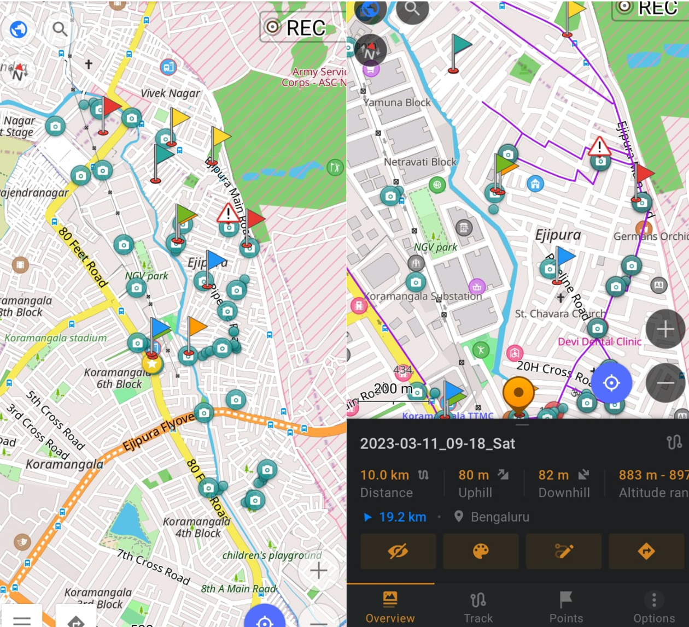
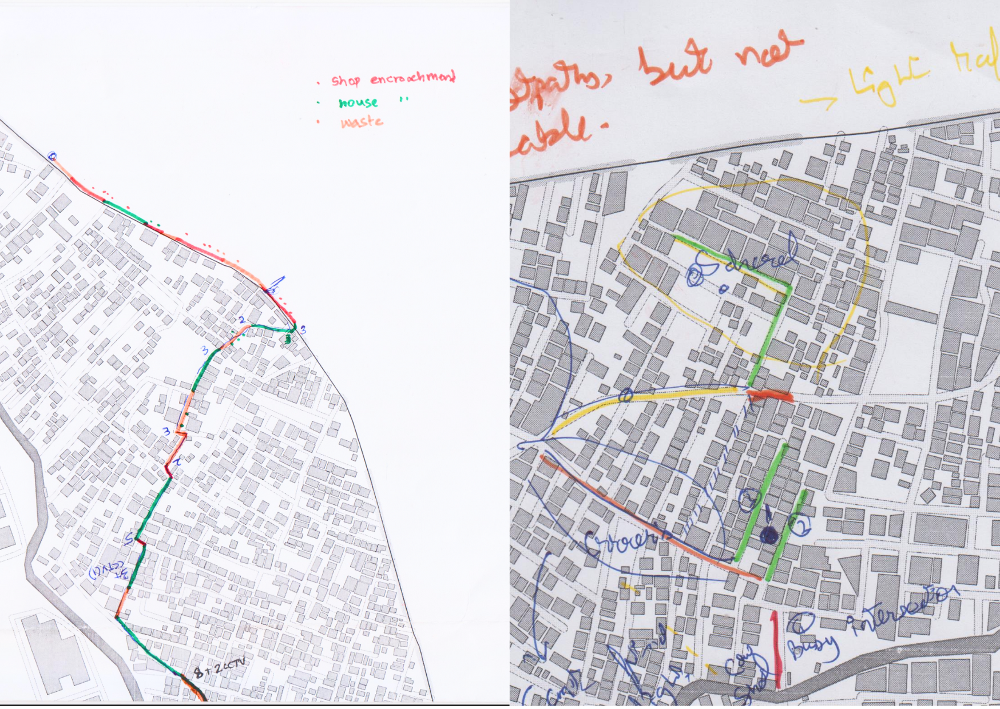

12 Field visits
Field visits, ideally, will be the biggest part of your walkability assessment. They provide an opportunity to observe and experience the walking environment firsthand, allowing you to identify strengths and weaknesses that may not be apparent from data alone. In this chapter, I will explore how to plan and conduct effective field visits, as well as how to collect and analyze data during your visits. I will also provide tips for observing & engaging with locals, who can be valuable partners in your walkability assessment.
I recommend doing at least four visits to your site in order to have a good understanding of what the space is like. Of course, the more the better but four visits is a good minimum.
12.1 Before your visit
Depending on how near or far you live to the study site, you will want to optimize each one to save on time and resources, hence planning what you’re going to do on site becomes paramount. Here’s a checklist to keep handy:
Review and research your study objectives. Before heading to the site, review your study objectives and make sure you have a clear understanding of what you want to achieve during your visit. This will help you achieve most of your goals for the day. Are you looking to assess the pedestrian infrastructure, traffic conditions, or walkability of a specific area? Having a clear understanding of your study objectives will help you focus your attention on the most relevant aspects of the area during your visit. This will change based on your visit, so before each one, reorient your objectives for the day.
-
Identify key areas of interest and plan a route Based on your study objectives, identify the key areas of interest that you want to visit during your field visit. This may include specific streets, intersections, or public spaces that are important for understanding the pedestrian experience. For example, If you’re assessing walkability to and from bus stops, where are those bus stops and which ones are the busiest? You can use Google Maps to identify these and begin your site visit there.
You can also use the methods descibed in section 8.1.2 to identify the busiest streets and begin your work there. Land use maps, traversing the neighbourhood in Street View news articles about your site, landmarks; all of these will not only help you orient yourself to your surroundings but also use them in conversation with residents. People like people who know about where they live.
Prepare the paraphernalia. While you’re walking around the neighborhood, a tool like OSMAnd will help you take geo-tagged notes and track your route. You’ll also want to carry a notebook, markers of different colors, water and some plain basemaps of the site in case you want to take notes. You can also download AR Ruler to help you measure street widths with your phones.
Find a buddy (or two). Field visits, especially walkability audits, are much more effective when done with company. Find a person who’s interested and willing to come, introduce them to your research questions and co-design your field visit with them. If you can’t find someone to accompany you, I’m sorry I hit a nerve.
12.2 During your visit
Once you have arrived at your site, it is time to begin your walkability audit. Here are some key things to keep in mind during your visit:
-
Start tracking your walk: Begin tracking your route as soon as you start your walk. This will allow you to easily recreate your route and make notes about specific locations later on. You can use tools like OSMAnd to track your location and take geo-tagged notes along the way.
OSMAnd allows you to put markes, geotag pictures and trace routes very easily. All this data can even be exported and visualized in any GIS software. Take lots of AV notes: Record audio and video notes as you walk through the site. These notes can capture the sounds and sights of the area, which can be valuable data for your analysis. It’s important to capture your initial perceptions and feelings as you walk through the area, as these can be used to validate or contradict later findings.
-
Audit the streets based on standard metrics and perception: Walk through the streets and audit them based on standard walkability metrics such as sidewalk width, street lighting, and the presence of street furniture. You can also note the perceived safety of the area, the amount of foot and vehicle traffic, and the overall comfort of the walking experience.
We used plain basemaps of Ejipura to color code roads based on how we felt while walking on them, how easy it was to walk and other landmarks we came across. Draw on your basemaps: As you walk through the area, use your plain basemaps to make notes and draw any specific features or observations that you want to remember. You can also use colored markers to highlight important areas or features (12.2).
Confirm findings from secondary research: As you walk through the area, confirm any findings from your secondary research. You may find that your initial assumptions and expectations about the area are confirmed or challenged by your on-the-ground observations. If you’ve identified some information about the population, try spotting instances of segregation outline in Appendix 16.2.
Remember to be observant and take detailed notes during your visit. These notes will be crucial for your analysis and will help you build a comprehensive understanding of the walkability of the area.
12.3 After your visit
After your site visit, there are a few things you should do to make sure you make the most out of the data you collected:
Document your visit. Take some time to document your visit and write down any observations, thoughts, or insights that you may have had during your visit. You can do this in your notebook or using a digital tool such as Notion or Obsidian. It is important to document as much as possible to avoid forgetting important details later.
Export your tracks. If you used a tracking tool such as OSMAnd during your visit, make sure to export the tracks so that you can import them into a GIS software later. This will help you visualize and analyze the data you collected during your visit.
Elaborate on notes. Take some time to elaborate on the notes you took during your visit. Add more details, sketches or photographs to supplement your observations. Make sure that you understand what you have collected and that your data is coherent.
Plan next visit. Based on your observations and findings, plan your next visit to the site. Determine if you need to focus on a different aspect of walkability, or if you need to visit during a different time of day. It is essential to make sure you plan your visit based on the insights and limitations you may have experienced during the previous visit.
12.4 Structuring your visits
In Section 6.1, I outlined how I separate my study in Ejipura into what I believed to be its constitutent parts. Suppose you have only four visits thatr you can do and you need to make the most of them, how would each one look like? Table 12.1 offers some insight.
| Site Visit # | Activities | Areas of Focus |
|---|---|---|
| 1 | Walk-through exploration, mapping, and photography | Level 1 and 2: Analyze the overall characteristics of the neighborhood, including its geographic boundaries, land uses, and demographic patterns. Also examine the pedestrian landscape of the neighborhood, including the design and accessibility of sidewalks, crosswalks, and other public spaces. |
| 2 | On-ground analysis, participatory exercises | Level 3 and 4: Investigate the distribution and characteristics of residential units and blocks within the neighborhood, such as their size, age, occupancy rate, and more. Also examine how land in the neighborhood is used, including the types of businesses and institutions present, the prevalence of green spaces and public parks, and the location of major roads and highways. Conduct interviews with local residents to understand their perspectives on the neighborhood. |
| 3 | Interviews, surveys, and community engagement activities | Level 5: Examine the availability and accessibility of key amenities and services in the neighborhood, including public transit, grocery stores, restaurants, schools, and healthcare facilities. Conduct more interviews in a different region to remove spatial bias. |
| 4 | Data analysis, community engagement or street audit | Level 6: Look at how people interact with the neighborhood, including their perceptions of safety, community engagement, social capital, and overall quality of life as a whole. You can also choose to do a street audit by auditing important routes that you should know of by now and assess streets based on standardized metrics. |
Of course, you must be flexible when it comes to something as subjective and variable as site visits, but the above example is to show how areas of focus can be split across multiple visits. The key is in planning them out.